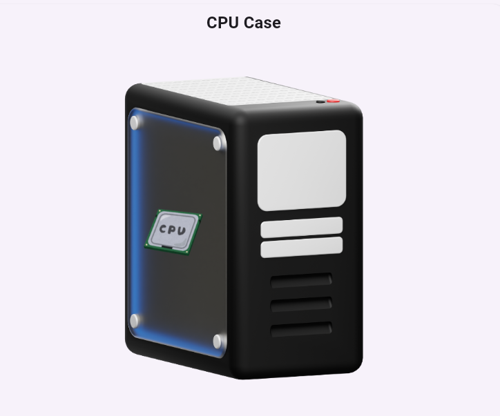

.png) The screen that show what you are doing on the computer.
The screen that show what you are doing on the computer.
Welcome, let's begin your journey to understanding computers. This lesson will help you understand what a computer is, it basic pats and how it works. By the end you'll fell confident in using computers in your daily life. Ready to start? Let's go!
What is a Computer?
A computer is an electronic device that can process, store and retrieve information. It can perform a wide variety of task by fellowing a set of instructions called a program. You use a computer for everything from browsing the Internet, creating documents, and playing games to managing your financial and communication with others.
Parts Of Computer
|
The screen that show what you are doing on the computer.
|
 CPU Case is box that contains the main parts of a computer like, motherboard, CPU and hard. | CPU is the brain of the computer that processes information and perform tasks. | |
| Temporary memory that helps computer works faster. Meaning, Random Access Memory | The main circuit board of he computer that connects all parts together. | keyboard is the device you use to type on the computer. | |
| The device you use to move the pointer and click things on the screen. | Speaker is a device that plays sound from your computer. | The device you use to move the pointer and click things on the screen. | |
| A part of the computer that helps show image and videos on the screen. | Hard Disk are device that stores all your data and files. | A device that prints documents and pictures onto paper. |
How Does a Computer Work?
At it core, a computer works by following four basic steps: Input, Processing, Storage, and Output. Let's look at each step one after the another.
Input: You provide information to the computer using devices like, keyboard and mouse.
Processing: The CPU process (the brain of the computer) process the data.
Storage: The computer saves the data for later use in memory (RAM or Hard Disk.)
Output: You see the results on your monitor, or the data get printed.
Advantage Of Computers
Computers have revolutionized the way we live, work and communication. Here are some key advantages of using computers:
Speed: computer can process information much faster than human
Accuracy: The computer tasks with high precision and accuracy
Storage: Computers can store vast amounts of data in small space.
Automation: Computers can automate repetitive task, saving time and effort
Connectivity:Computer enables us to connect with people around the world
Creativity: Computer allows us to create art, music and other forms of expression
Computers can seem intimidating at first, but remember, every expert was once a beginner. Learning about computers will make you ,more efficient and open up new opportunities. Imagine being able to create stunning presentations, analyze data quickly or even learn coding to build your own website. The possibilities are endless, and it all start with understanding the basics